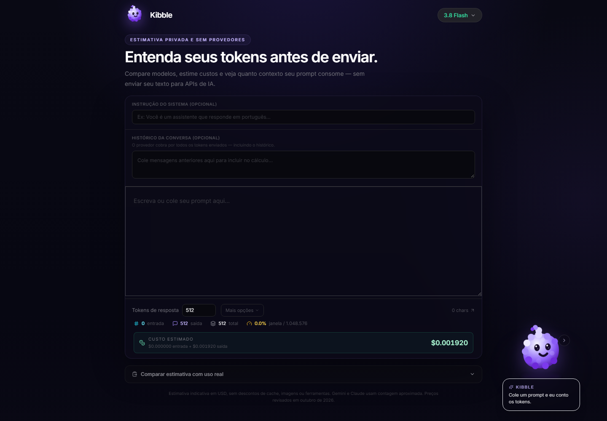

Produto próprio · Full Stack · 2026
Kibble
Uma ferramenta para estimar tokens, custos e uso da janela de contexto antes de enviar um prompt para um modelo de IA.
Concebi e desenvolvi o produto de ponta a ponta, da experiência reativa no navegador à API de estimativa, com privacidade como restrição central.

Problema
Ao construir prompts e assistentes, é difícil prever quanto uma requisição vai custar, quanto contexto ainda está disponível e como o histórico afeta o consumo. Testar diretamente nas APIs adiciona custo, latência e exposição desnecessária de rascunhos.
Solução
O Kibble decompõe a requisição em instrução do sistema, histórico, prompt e resposta prevista. A interface atualiza as estimativas em tempo real e permite comparar modelos sem exigir conta ou chave de API.
- Privacidade por design. O texto não é encaminhado para OpenAI, Google ou Anthropic e não existe banco de dados, conta ou telemetria.
- Comparação prática. Custos de entrada e saída, janela de contexto e orçamento aparecem no mesmo fluxo.
- Transparência. O produto diferencia contagem nativa para modelos OpenAI de estimativas aproximadas para outros tokenizadores.
Arquitetura
A separação entre interface e serviço de estimativa mantém o frontend responsivo e concentra regras, validações e catálogo de modelos na API.
Decisões técnicas
- Debounce na interface para atualizar estimativas enquanto o usuário digita sem criar uma sequência excessiva de requisições.
- Validação e limites na API para tamanho do corpo, volume total de texto e frequência por IP.
- Catálogo versionado para manter preços, contexto e estratégia de tokenização explícitos.
- Mascote orientada a estado para comunicar processamento, alerta, pausa e sucesso sem competir com os dados.
Qualidade e entrega
O repositório combina testes de API, validação matemática de preços e limites, testes de componentes React e verificação de build. A integração contínua executa essa suíte a cada push e pull request.
- 36 testes unitários documentados para o backend.
- 66 asserções documentadas para cálculos e limites.
- Deploy declarativo no Render com health check e configuração cruzada de CORS.